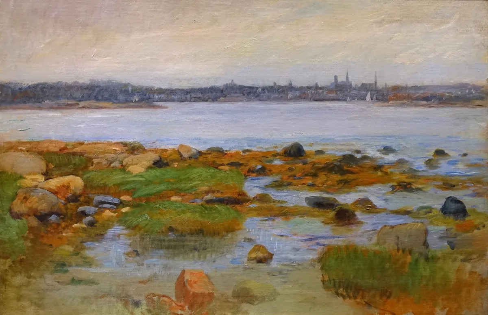

Site 7 of 9 · Frank Duveneck
Eastern Point, looking back at the city
Secondary source · spot approximate

- Standing point
- Eastern Point (42.58024, -70.66448)
- Looking at
- Downtown (City Hall)
- Direction of view
- N, 2° from true north
- Distance to subject
- 3.8 km (2.3 mi)
- The painter's light
- two hours before sunset: about 5:28 p.m. on August 25, 2027
Where they stood
A secondary source describes Horizon at Gloucester as the port's skyline “from Eastern Point.”179 The marker is placed at Eastern Point Light; the exact spot is not recorded. Duveneck stayed at the Harbor View Hotel in East Gloucester.180
The light
From Eastern Point the city lies almost due north, about 3.8 km away, so the sun is behind or beside the painter all day and the skyline is always lit from the front: from the east in the morning, the south at midday, the west in late afternoon.
Paint it today
- The lighthouse is Coast Guard property and closed to the public.181 The Dog Bar Breakwater beside it is a 2,250-foot granite jetty: wear sturdy shoes and stay off it when waves break over the stones.182
- Duveneck's foreground is low-tide ledge and weed. Time a session for low water and the tide pools will give you his foreground.